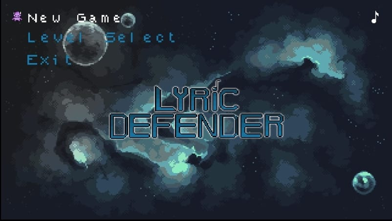
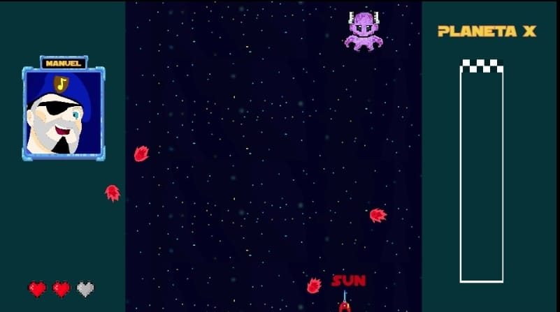
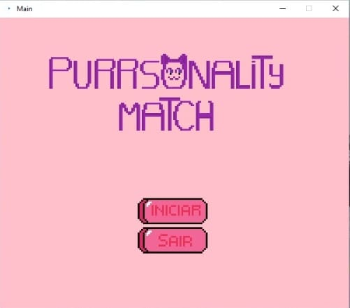
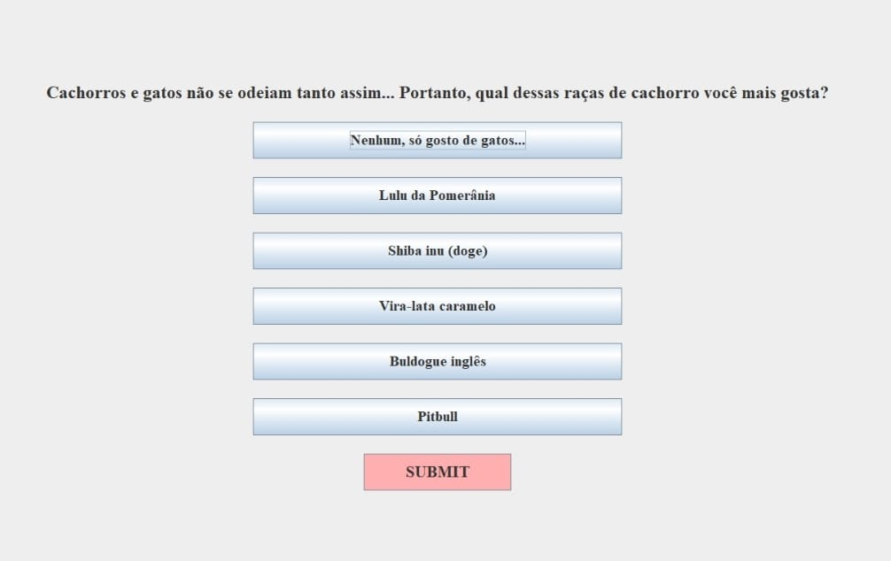
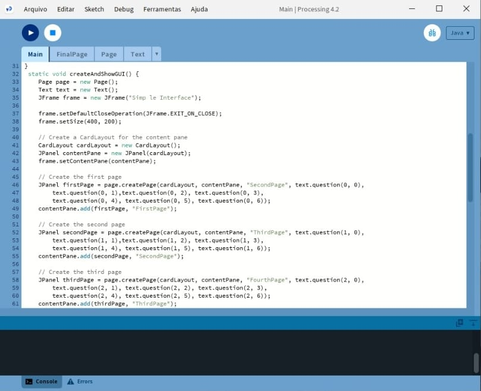
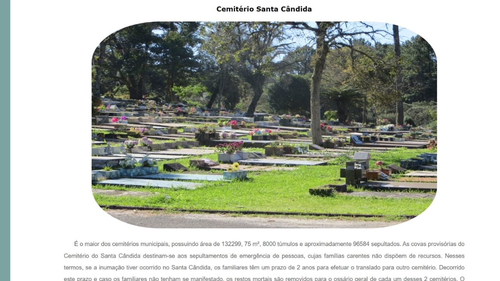

Esta disciplina foi voltada para projetos práticos, buscando evoluir nossas habilidades de programação, planejamento e trabalho em equipe. Aprendemos temas como inovação, pesquisa, emprendedorismo e internacionalização. No final, nos tornando capazes de desenvolver aplicativos simples de forma colaborativa e no contexto do mundo real.
Em Lyric Defender, jogo desenvolvido pela equipe CoreI6 o usuário é desafiado a utilizar suas habilidade de datilografia para derrotar as naves inimigas antes que elas possam contra-atacá-lo. Juntando musicalidade a dinâmica, o objetivo é desenvolver a agilidade de digitação do player.
 O jogo foi desenvolvido a partir do Construct 3, plataforma para criação de jogos. Então, para acessar o arquivo abra a partir dessa plataforma.
Site Construct 3: Construct3
Download Lyric DefenderEm Purrsonality Match, um quiz de personalidade desenvolvido pela equipe CoreI6 o usuário responde uma série de perguntas para chegar em resultado final: qual gatinho você é.
  O quiz foi desenvolvido em Java a partir da IDE processing.
Site para download do Processing: Processing
Download Purrsonality MatchEste site foi desenvolvido em um projeto de integração da turma toda, visando ampliar o turismo da cidade de Curitiba, a partir da distribuição da informação. Cada grupo ficou responsável por uma página, sendo eu, a Isabella Berkembrock e a Letícia Aiko responsáveis pela aba "Cemitérios".
O desenvolvimento de um site sobre a cidade de Colombo está em andamento...